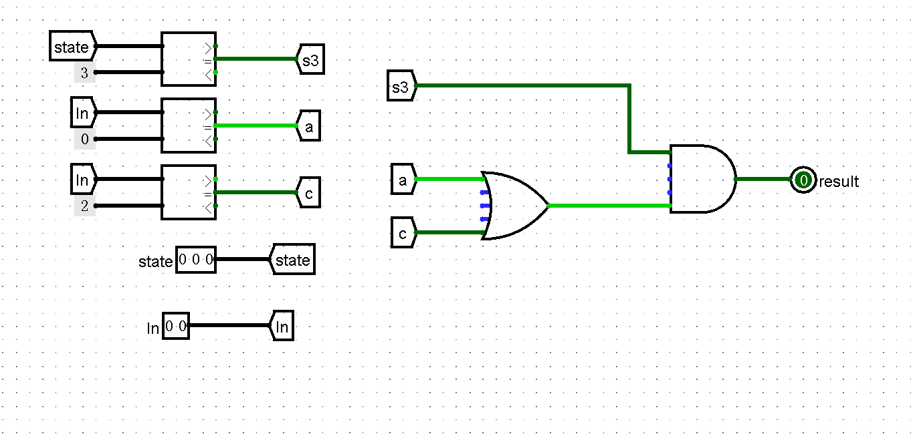

计组P0总结
本文最后更新于 2024年9月24日 晚上
P0Q4:Logisim中的FSM
通过搭建Mealy状态机来实现正则表达式的检测
首先要分清Mealy状态机和Moore状态机在Logisim电路搭建中的区别
Mealy状态机与Moore状态机
Mealy状态机

Mealy状态机的输出由当前状态和输入两者共同决定
Moore状态机
Moore状态机的输出由当前状态决定
解题步骤
对于本题Mealy状态机,我们分以下四步完成搭建.
- 确定状态编码,画出状态转移
- 搭建Mealy状态机框架,确定复位方式
- 实现状态转移的Logisim电路
- 实现输出逻辑的Logisim电路
确定状态编码,画出状态转移
| 编码 | 状态 |
|---|---|
| S0 | IDLE(空闲,当reset置1时回到此状态) |
| S1 | “b” |
| S2 | “bb” |
| S3 | “ba”,”bc”,”bba”或”bbc” |
| S4 | 满足正则表达式的状态 |
搭建Mealy状态机框架,确定复位方式
实现状态转移的Logisim电路
确定In与state
通过comparator联通对应的tunnel
根据状态转移图搭建变换关系电路
通过与非门与multiplexer,实现变换关系.这里我们以s1为例说明,若s1与b均为1,则nxt置2,反之置为0.
输出下一个状态
利用或门性质,对于这13个输入,只有其中一个是有效的,其余皆为0(我在这里还加入了一个实际上无效果的$s4\rightarrow s0$,便于检查)
实现输出逻辑的Logisim电路
考虑输入和当前状态两者,只有它们所决定的下一个状态为s4时,output才为1,否则为0

思考
1
状态存储器的复位方式包括异步复位和同步复位，二者的定义分别是什么？两种复位方式在 Verilog 中可以通过什么语句句式实现？在 Logisim 中又可以通过什么样的电路框架实现？
同步复位:当时钟信号的上升沿到来时,若复位信号有效,对系统进行复位.
异步复位:当复位信号有效时,立即对系统进行复位.这一过程与时钟信号无关.
1 | |
1 | |
在Logisim中,寄存器的clear端口可以很方便地实现异步复位,而同步复位需要在信号输入D端口前加上一个multplexer,由areset决定信号不变还是置0,待下一次时钟信号上升沿输入寄存器
2
在 Verilog 中我们可以通过initial块对状态存储器的初值进行定义，在 Logisim 中我们可以通过哪些电路框架实现赋初值的功能？
要实现对于是否处于初始状态的判断,我们需要用到Counter和plexer,基本逻辑框架如下
基于此,我们可以实现一个带有初始赋值功能的寄存器
P0Q1:CRC 校验码计算电路的设计与测试
设计模二除法器
注:本题不需要用到D端口
使用四位模二除法器搭建 8 位 CRC 校验码计算电路
P0Q2:实现GRF
端口
主要部件
问题
三态
在选择器组件中,我们必须将DMX(demultiplexer)中的three-state设置为yes
启用three-state后,会控制demultiplexer的输入输出端口进入高阻态
先设定DMX的three-state为no,WE为1,IN为1,SEL为0,在时钟信号上升沿:
可以看到寄存器1存储值为1,OUT1为高电平
接着再令SEL为1,在下一个时钟上升沿:
可以看到OUT1恢复为低电平,OUT2变为高电平,这其实并不符合我们的本意.OUT1此刻应该保持为高电平,且寄存器1不应该改变值为0.
最简便的对策就是勾选three-state,这样DMX的输出端口在未被SEL信号选中的时候会输出高阻值(X),避免对连接的寄存器和输出端口产生影响.
问题
三态
在选择器组件中,我们必须将DMX(demultiplexer)中的three-state设置为yes
启用three-state后,会控制demultiplexer的输入输出端口进入高阻态
先设定DMX的three-state为no,WE为1,IN为1,SEL为0,在时钟信号上升沿:
可以看到寄存器1存储值为1,OUT1为高电平
接着再令SEL为1,在下一个时钟上升沿:
可以看到OUT1恢复为低电平,OUT2变为高电平,这其实并不符合我们的本意.OUT1此刻应该保持为高电平,且寄存器1不应该改变值为0.
最简便的对策就是勾选three-state,这样DMX的输出端口在未被SEL信号选中的时候会输出高阻值(X),避免对连接的寄存器和输出端口产生影响.